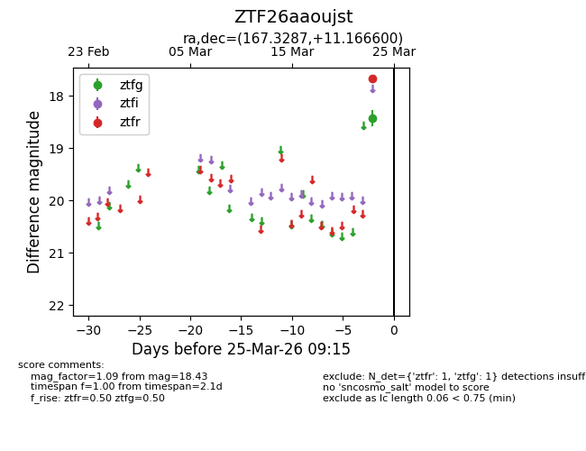
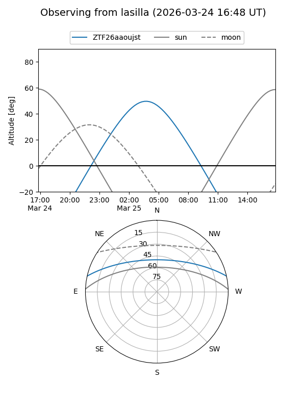
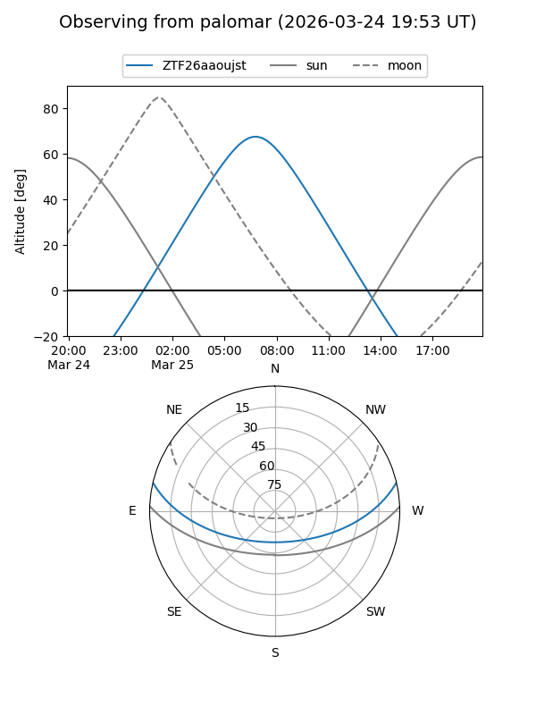

ZTF26aaoujst
Target ZTF26aaoujst at 2026-03-25 09:18
Aliases and brokers:
FINK: link
Lasair: link
ALeRCE: link
alt names
ZTF26aaoujst (ztf,fink_ztf)
Coordinates:
equatorial (ra, dec) = 167.3287,+11.16660
equatorial (HMS+DMS) = 11:09:18.89,+11:09:59.76
galactic (l, b) = (241.6127,+61.18580)
Flags:
Photometry:
last ztfg=18.43, ztfr=17.67
1 ztfg, 1 ztfr detections
Lightcurve

Visibility


Additional plots